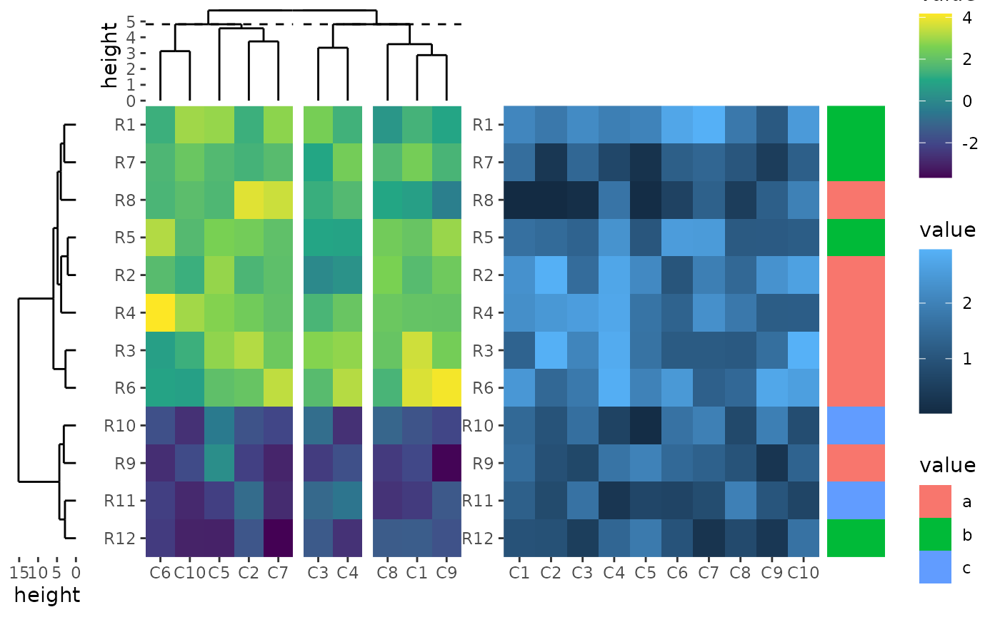

layout_stack put plots horizontally or vertically. You
can also use the alias ggstack.
set.seed(123)
mat1 <- matrix(rnorm(80, 2), 8, 10)
mat1 <- rbind(mat1, matrix(rnorm(40, -2), 4, 10))
rownames(mat1) <- paste0("R", 1:12)
colnames(mat1) <- paste0("C", 1:10)
mat2 <- matrix(runif(60, max = 3, min = 1), 6, 10)
mat2 <- rbind(mat2, matrix(runif(60, max = 2, min = 0), 6, 10))
rownames(mat2) <- paste0("R", 1:12)
colnames(mat2) <- paste0("C", 1:10)
le <- sample(letters[1:3], 12, replace = TRUE)
names(le) <- paste0("R", 1:12)
ind <- sample(12, 12)
mat1 <- mat1[ind, ]
mat2 <- mat2[ind, ]
le <- le[ind]
ht1 <- ggheatmap(mat1, width = 1) +
scale_fill_viridis_c() +
hmanno("t") +
align_dendro(k = 3L) +
scale_y_continuous(expand = expansion()) +
hmanno(NULL)
ht2 <- ggheatmap(mat2, width = 1)
ggstack(mat1, sizes = c(0.2, 1, 1)) +
align_dendro(size = 0.2) +
scale_x_reverse() +
ht1 +
ht2 +
active() +
ggalign(data = le, size = 0.2) +
geom_tile(aes(x = .column_index, fill = value)) +
scale_x_continuous(name = NULL, labels = NULL, breaks = NULL) &
theme(plot.margin = margin())
Session information
sessionInfo()
#> R version 4.4.1 (2024-06-14)
#> Platform: x86_64-pc-linux-gnu
#> Running under: Ubuntu 22.04.4 LTS
#>
#> Matrix products: default
#> BLAS: /usr/lib/x86_64-linux-gnu/openblas-pthread/libblas.so.3
#> LAPACK: /usr/lib/x86_64-linux-gnu/openblas-pthread/libopenblasp-r0.3.20.so; LAPACK version 3.10.0
#>
#> locale:
#> [1] LC_CTYPE=C.UTF-8 LC_NUMERIC=C LC_TIME=C.UTF-8
#> [4] LC_COLLATE=C.UTF-8 LC_MONETARY=C.UTF-8 LC_MESSAGES=C.UTF-8
#> [7] LC_PAPER=C.UTF-8 LC_NAME=C LC_ADDRESS=C
#> [10] LC_TELEPHONE=C LC_MEASUREMENT=C.UTF-8 LC_IDENTIFICATION=C
#>
#> time zone: UTC
#> tzcode source: system (glibc)
#>
#> attached base packages:
#> [1] stats graphics grDevices utils datasets methods base
#>
#> other attached packages:
#> [1] ggalign_0.0.1 ggplot2_3.5.1
#>
#> loaded via a namespace (and not attached):
#> [1] gtable_0.3.5 jsonlite_1.8.8 highr_0.11 dplyr_1.1.4
#> [5] compiler_4.4.1 tidyselect_1.2.1 tidyr_1.3.1 jquerylib_0.1.4
#> [9] systemfonts_1.1.0 scales_1.3.0 textshaping_0.4.0 ggh4x_0.2.8
#> [13] yaml_2.3.10 fastmap_1.2.0 R6_2.5.1 labeling_0.4.3
#> [17] generics_0.1.3 patchwork_1.2.0 knitr_1.48 tibble_3.2.1
#> [21] desc_1.4.3 munsell_0.5.1 bslib_0.8.0 pillar_1.9.0
#> [25] rlang_1.1.4 utf8_1.2.4 cachem_1.1.0 xfun_0.46
#> [29] fs_1.6.4 sass_0.4.9 viridisLite_0.4.2 cli_3.6.3
#> [33] pkgdown_2.1.0 withr_3.0.1 magrittr_2.0.3 digest_0.6.36
#> [37] grid_4.4.1 lifecycle_1.0.4 vctrs_0.6.5 evaluate_0.24.0
#> [41] glue_1.7.0 farver_2.1.2 ragg_1.3.2 fansi_1.0.6
#> [45] colorspace_2.1-1 purrr_1.0.2 rmarkdown_2.27 tools_4.4.1
#> [49] pkgconfig_2.0.3 htmltools_0.5.8.1